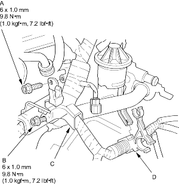
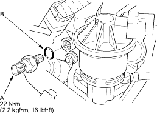

- Remove the resonator (see step 5 on page 6-29).
- Remove the bolt (A) and loosen the bolt (B) securing the VTEC solenoid valve, then remove the harness bracket (C) from the VTEC solenoid valve.

- Remove the harness clamp (D) from the connecting pipe.
- Disconnect the VTEC oil pressure switch connector, then remove the VTEC oil pressure switch (A).

- Install the VTEC oil pressure switch using a new O-ring (B).
Special Tools Required
- Air Stopper, 07LAJ-PR30201
- Valve Inspection Set, 07LAJ-PR30101
D15Y4, D16V2, D16W7, D17A2, D17A5, D17Z3 engines:
- Remove the resonator (see step 5 on page 6-29).
- Remove the ignition coil cover, then remove the four ignition coils (see page 4-24).
- Remove the throttle cable clamps and harness holder from the cylinder head cover (see step 9 on page 6-19).
- Remove the cylinder head cover (see step 10 on page 6-19).
- Set the No. 1 piston at TDC (see step 3 on page 6-18).
- Verify that the intake secondary rocker arm (A) moves independently of the intake primary rocker arm (B).
- If the intake secondary rocker arm does not move, remove the primary and secondary rocker arms as an assembly and check that the pistons in the secondary and primary rocker arms move smoothly. If any rocker arm needs replacing, replace the primary and secondary rocker arms as an assembly and retest.
- If the intake secondary rocker arm moves freely, go to step 7.

- Repeat step 6 on the remaining intake secondary rocker arms with each piston at TDC. When all the secondary rocker arms pass the test, go to step 8.